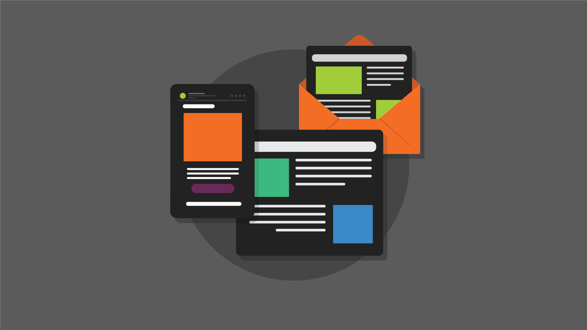

Rodzaje edytorów WYSIWYG
Co to znaczy "WYSIWYG"
WYSIWYG - (what you see is what you get) Strony internetowe tradycyjnie powstają z użyciem języka HTML, Javascript czy CSS. Istnieją jednak metody, które pozwalają na edytowanie, lub nawet stworzenie całej witryny internetowej bez kodowania. Należą do nich edytory WYSIWYG. Czym są? Jakie jest ich zastosowanie, wady oraz zalety? Czym różnią się od kreatorów stron www? Na wszystkie powyższe pytania odpowiem w tym wpisie. Zapraszam do lektury!
